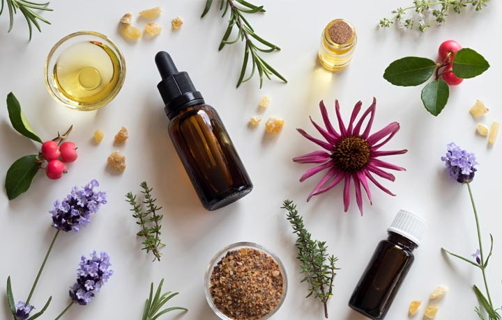
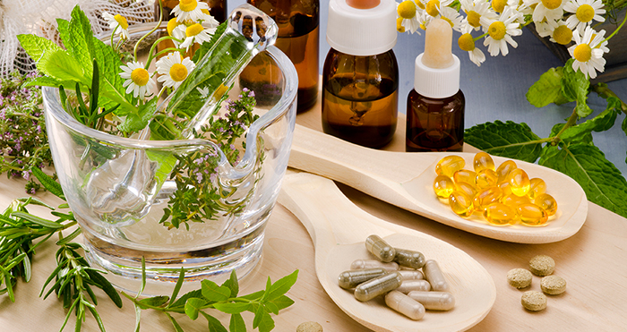

Природни начини за побољшање здравља
Природни савети могу вам помоћи да унапредите здравље без хемијских суплемената и лекова. Овај приступ користи благодети природе кроз биљке, есенцијална уља и здраве навике.
- Коришћење биљака попут камилице за опуштање
- Есенцијална уља за бољи сан и релаксацију
- Детоксикација тела кроз природне сокове
- Дневна рутина у природи ради опуштања и пуњења енергијом
Предности природних суплемената
Природни суплементи попут витамина Ц, магнезијума и пробиотика могу бити од велике користи за имунитет, енергију и пробаву. Консултујте се са стручњаком пре употребе.
- Витамин Ц за јачање имунитета
- Магнезијум за опуштање и бољи сан
- Пробиотици за здраву пробаву
- Омега-3 масне киселине за срце и мозак